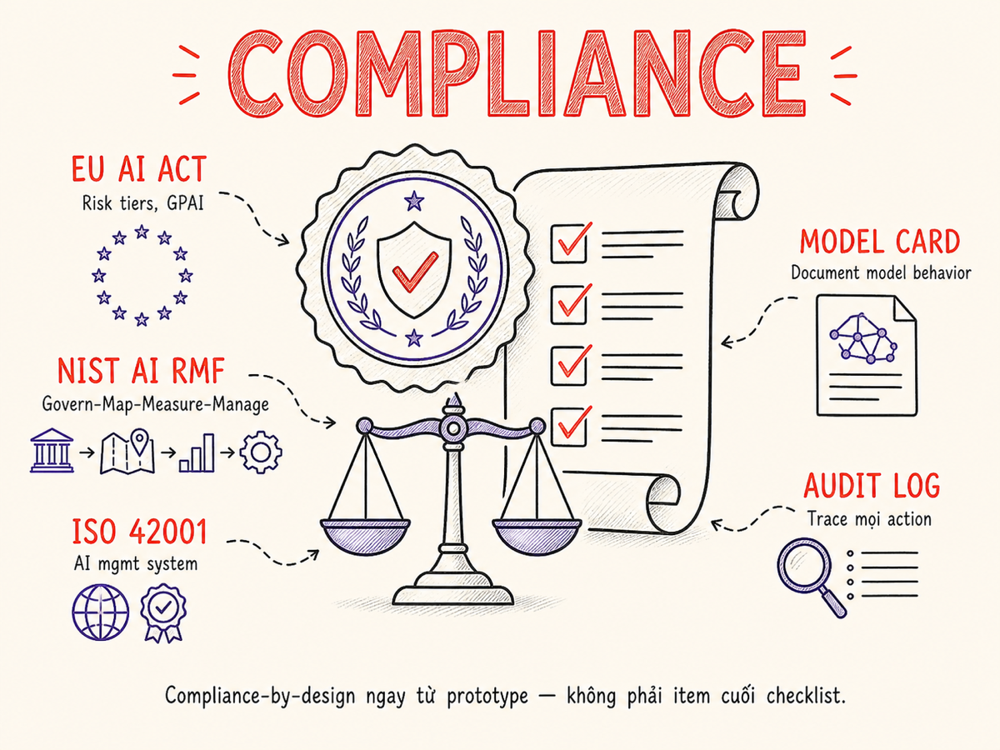

Compliance & Governance
Từ EU AI Act đến NIST AI RMF, từ model cards đến audit trails — hướng dẫn toàn diện để xây dựng AI có trách nhiệm, đáp ứng quy định, và bền vững về mặt pháp lý lẫn đạo đức.

34.1 Tại Sao Governance Quan Trọng
Trong nhiều năm, câu trả lời mặc định cho câu hỏi "Chúng ta có cần lo compliance cho AI không?" là "sau này tính". Nhưng năm 2025–2026 đã thay đổi điều đó hoàn toàn: EU AI Act bắt đầu áp dụng theo từng giai đoạn, hàng chục tiểu bang Mỹ đưa ra luật riêng, và các vụ kiện tụng liên quan đến AI đang gia tăng nhanh chóng.
Governance không chỉ là vấn đề pháp lý. Có bốn lý do cốt lõi tại sao mọi tổ chức xây dựng AI cần nghiêm túc với nó:
⚖ Rủi ro pháp lý
EU AI Act phạt tới €35 triệu hoặc 7% doanh thu toàn cầu. GDPR đã phạt các công ty hàng trăm triệu EUR. Class-action liên quan đến AI bias đang nổi lên ở Mỹ.
🏷 Rủi ro thương hiệu
Một sự cố AI — kết quả phân biệt đối xử, nội dung gây hại, data leak — có thể phá hủy niềm tin của người dùng nhanh hơn bất kỳ bug phần mềm nào. Báo chí và mạng xã hội khuếch đại rất nhanh.
🧭 Rủi ro đạo đức
AI tác động đến quyết định tuyển dụng, vay vốn, y tế, giáo dục. Thiếu governance dẫn đến hại thực sự cho người dùng — đặc biệt nhóm dễ tổn thương.
📋 Trách nhiệm pháp nhân
Khi AI đưa ra quyết định sai (chẩn đoán sai, từ chối cho vay không công bằng), câu hỏi "ai chịu trách nhiệm?" ngày càng rõ ràng hơn về mặt pháp luật — và tổ chức triển khai thường là bên bị kiện đầu tiên.
EU AI Act đang trong giai đoạn áp dụng, California đã có nhiều luật về AI, Trung Quốc có quy định về generative AI và thuật toán gợi ý, Singapore có Model AI Governance Framework. Không còn "vùng trắng" pháp lý cho AI ở các thị trường lớn.
34.2 EU AI Act: Risk Tiers, GPAI, Timeline, và Phạt
EU AI Act (chính thức có hiệu lực tháng 8/2024) là khung pháp lý AI toàn diện đầu tiên trên thế giới. Nó phân loại hệ thống AI theo mức độ rủi ro và áp đặt nghĩa vụ tương ứng. Bất kỳ công ty nào deploy AI cho người dùng EU — kể cả startup ngoài EU — đều nằm trong phạm vi điều chỉnh.
Bốn cấp độ rủi ro
| Tier | Định nghĩa | Ví dụ ứng dụng AI | Nghĩa vụ / Hậu quả |
|---|---|---|---|
| Unacceptable Risk | Đe dọa quyền cơ bản, thao túng hành vi người dùng không nhận thức | Social scoring công dân, nhận diện cảm xúc nơi làm việc, subliminal manipulation | Cấm hoàn toàn — không có ngoại lệ thương mại |
| High Risk | Tác động lớn đến an toàn hoặc quyền lợi cơ bản | AI trong tuyển dụng, tín dụng, y tế chẩn đoán, hệ thống giáo dục, biên giới/di trú | Đăng ký EU database, conformity assessment, human oversight bắt buộc, logging |
| Limited Risk | Rủi ro minh bạch: người dùng tương tác với AI | Chatbots, deepfake generators, emotion recognition (commercial) | Bắt buộc disclosure: "Bạn đang tương tác với AI" |
| Minimal Risk | Rủi ro thấp, tác động không đáng kể | Spam filter, AI trong game, recommender systems thông thường | Không bắt buộc — khuyến khích voluntary code of conduct |
GPAI (General-Purpose AI) Obligations
Đây là phần đặc biệt áp dụng cho foundation model providers (OpenAI, Anthropic, Google, Mistral, v.v.) — không phải chỉ người deploy. Các GPAI model với "systemic risk" (compute training > 10²⁵ FLOPs) có thêm nghĩa vụ:
- Công bố technical documentation và training data summary
- Thực hiện adversarial testing (red-teaming) trước khi release
- Báo cáo serious incidents cho cơ quan có thẩm quyền EU
- Duy trì cybersecurity protections phù hợp
Timeline áp dụng 2025–2027
| Ngày | Điều khoản áp dụng |
|---|---|
| Feb 2025 | Cấm Unacceptable Risk AI systems có hiệu lực |
| Aug 2025 | GPAI obligations áp dụng; AI literacy training bắt buộc |
| Aug 2026 | High-Risk AI systems (Annex I — safety components) phải comply |
| Aug 2027 | High-Risk AI systems (Annex III — các lĩnh vực khác) phải comply |
Mức phạt
- Vi phạm cấm (Unacceptable Risk): tới €35 triệu hoặc 7% doanh thu toàn cầu
- Vi phạm nghĩa vụ khác: tới €15 triệu hoặc 3% doanh thu toàn cầu
- Cung cấp thông tin sai: tới €7.5 triệu hoặc 1.5% doanh thu toàn cầu
- SMEs và startups: phạt theo mức thấp hơn trong hai mức tuyệt đối và tương đối
Nếu bạn deploy AI có người dùng tại EU (kể cả EU citizens đang ở ngoài EU), bạn nằm trong phạm vi. Quy tắc tương tự GDPR: không cần có văn phòng tại EU để bị điều chỉnh. Startups ở Việt Nam, Mỹ, Úc deploy cho EU user — tất cả đều phải comply.
34.3 NIST AI Risk Management Framework (AI RMF 1.0)
NIST AI RMF 1.0 (phát hành tháng 1/2023) là framework tự nguyện của Mỹ để quản lý rủi ro AI trong vòng đời của hệ thống. Không mang tính bắt buộc pháp lý (trừ khi contractor chính phủ), nhưng đây là best practice baseline được ngành công nhận rộng rãi — và được tham chiếu trong nhiều quy định khác.
GOVERN — Nền tảng của mọi thứ
GOVERN không phải một bước — nó là điều kiện tiên quyết. Tổ chức cần: thiết lập AI risk tolerance rõ ràng, phân công ownership (ai chịu trách nhiệm cho mỗi AI system), tạo cross-functional team (không chỉ kỹ thuật), và training cho mọi cấp.
MAP → MEASURE → MANAGE
- MAP: Context mapping — ai là end user, ai là người bị ảnh hưởng gián tiếp, harms có thể xảy ra (bias, privacy, safety, fairness), benefits dự kiến. Output: risk taxonomy cho system cụ thể.
- MEASURE: Quantify rủi ro đã xác định. Dùng evals, bias audits, red-teaming, third-party assessments. Ưu tiên theo likelihood × severity.
- MANAGE: Xây dựng controls, monitoring, incident response plans. Quyết định accept/mitigate/transfer/avoid từng risk. Theo dõi residual risks theo thời gian.
Download NIST.AI.100-1.pdf (miễn phí). Phần Profiles cho phép bạn tạo
"current profile" (thực trạng) và "target profile" (mục tiêu) để có roadmap cụ thể.
Đây là công cụ communication tốt với leadership.
34.4 ISO/IEC 42001:2023 — AI Management System
ISO/IEC 42001:2023 là tiêu chuẩn quốc tế đầu tiên về AI Management System (AIMS). Nó tương tự ISO 27001 cho information security — cung cấp framework để các tổ chức chứng minh họ có systematic approach trong quản lý AI có trách nhiệm.
Cấu trúc High-Level Structure (HLS)
42001 tuân theo cấu trúc Annex SL (HLS) giống ISO 9001/27001, cho phép tích hợp dễ dàng:
| Clause | Nội dung | Key requirements |
|---|---|---|
| 4 | Context of the Organization | Xác định scope AIMS, internal/external context, interested parties |
| 5 | Leadership | Management commitment, AI policy, roles và responsibilities |
| 6 | Planning | Risk và opportunity assessment, AI objectives đo lường được |
| 7 | Support | Resources, AI competency, awareness, communication, documentation |
| 8 | Operation | AI system lifecycle management, supply chain oversight, operational controls |
| 9 | Performance Evaluation | Monitoring, internal audit, management review |
| 10 | Improvement | Nonconformity, corrective action, continual improvement |
Certification Process
- Gap analysis: Đánh giá hiện trạng so với các requirements
- AIMS implementation: Xây dựng policies, procedures, controls (thường 6–18 tháng)
- Stage 1 audit: Review documentation bởi accredited certification body
- Stage 2 audit: On-site assessment thực tế
- Certificate issuance: Có giá trị 3 năm, với annual surveillance audits
Nếu đã có ISO 27001, việc thêm 42001 dễ hơn nhiều vì HLS giống nhau. Annex B của 42001 có thêm AI-specific controls không có trong 27001, đặc biệt về data governance, model lifecycle, và AI system transparency.
34.5 Luật Mỹ: Executive Orders và State Laws
Executive Order 14110 (Biden, Oct 2023)
EO 14110 "Safe, Secure, and Trustworthy AI" là văn bản toàn diện nhất của chính quyền liên bang Mỹ về AI. Các điểm quan trọng với AI engineers:
- Yêu cầu providers của frontier AI models báo cáo safety test results cho chính phủ
- NIST phải phát triển thêm guidelines cho generative AI
- Agencies phải inventory AI use trong chính phủ và đánh giá rủi ro
- Watermarking/labeling cho AI-generated content (được khuyến khích)
Chính quyền Trump (2025) đã revoke EO 14110 và thay thế bằng EO 14179 với hướng tiếp cận "innovation-first". Các quy định ở cấp liên bang Mỹ rất nhạy cảm với chính trị — theo dõi liên tục. Trong khi đó, luật cấp tiểu bang ổn định hơn.
State Laws đáng chú ý năm 2025–2026
| Luật | Tiểu bang | Phạm vi | Điểm nổi bật |
|---|---|---|---|
| AB 1008 | California | AI-generated training data | Mở rộng CCPA: dữ liệu cá nhân trong AI training phải được phép |
| SB 1047 (vetoed) | California | Frontier AI safety | Bị Governor Newsom veto 2024 — nhưng các phiên bản mới đang được soạn |
| Colorado AI Act | Colorado | High-risk AI decisions | Yêu cầu impact assessment, disclosure khi AI đưa ra "consequential decisions" |
| Texas AI Act | Texas | Consequential AI decisions | Tương tự Colorado — hướng EU-style risk-based approach |
| BIPA | Illinois | Biometric data | Đã áp dụng từ 2008, nhưng nghiêm trọng hơn với facial recognition AI |
34.6 Ngành Đặc Thù: HIPAA, GLBA, FERPA
Healthcare AI — HIPAA
HIPAA (Health Insurance Portability and Accountability Act) áp dụng cho bất kỳ AI system nào xử lý Protected Health Information (PHI). Key requirements:
- Minimum Necessary Standard: AI chỉ được truy cập PHI cần thiết cho task
- Business Associate Agreements (BAA): Mọi AI vendor xử lý PHI đều phải ký BAA — kể cả OpenAI, Anthropic (họ có HIPAA tiers)
- Audit logs: Ghi lại mọi access vào PHI, kể cả qua AI
- De-identification: Trước khi dùng PHI cho training, phải de-identify theo Safe Harbor hoặc Expert Determination
- FDA Software as Medical Device (SaMD): AI đưa ra quyết định chẩn đoán/điều trị có thể là medical device — cần FDA clearance/approval
Finance AI — GLBA và SR 11-7
Gramm-Leach-Bliley Act (GLBA) và Supervisory Guidance on Model Risk Management (SR 11-7) của Fed tạo thành khung quản lý model risk trong tài chính:
- Model Risk Management (MRM): Validate model trước deployment, monitor sau deployment
- Fair Lending laws (ECOA, Fair Housing Act): AI credit scoring không được có disparate impact theo race, gender, national origin
- Explainability: Khi từ chối credit, phải có adverse action notice giải thích lý do — "AI quyết định" không phải lý do hợp lệ
- Third-party risk: OCC, FDIC yêu cầu banks quản lý AI vendor risk như bất kỳ third-party service nào
Education AI — FERPA và COPPA
- FERPA: Education records (grades, disciplinary records) không được chia sẻ với AI vendors mà không có explicit consent từ phụ huynh/học sinh 18+
- COPPA: AI services cho trẻ dưới 13 cần parental consent để collect bất kỳ data nào
- Student Data Privacy: Nhiều tiểu bang có thêm luật — California SOPIPA, NY Education Law 2-d
34.7 SOC 2 và AI Services
SOC 2 (System and Organization Controls 2) là audit report chứng minh một service provider có controls đầy đủ cho security, availability, processing integrity, confidentiality, và privacy. Khi bạn offer AI service cho enterprise customers, họ thường yêu cầu SOC 2 Type II report.
AI-specific considerations trong SOC 2
| Trust Service Criteria | AI-specific concern | Control ví dụ |
|---|---|---|
| Security (CC) | Prompt injection attacks, model extraction, unauthorized access to training data | Input/output filtering, rate limiting, API key rotation, penetration testing |
| Availability (A) | LLM API provider outages, model latency degradation | Multi-provider fallback, SLA monitoring, circuit breakers |
| Processing Integrity (PI) | AI outputs có thể sai — integrity của "kết quả" AI rất khác traditional software | Output validation, human review cho high-stakes decisions, eval monitoring |
| Confidentiality (C) | Dữ liệu khách hàng có thể xuất hiện trong AI output (memorization) | Data isolation, no training on customer data, data retention policies |
| Privacy (P) | PII trong prompts có thể được log và retain | PII masking, log retention limits, right to deletion procedures |
Vendor Management trong AI Context
SOC 2 yêu cầu bạn quản lý third-party risk — bao gồm AI model providers. Điều này có nghĩa:
- Có written agreements với providers (OpenAI, Anthropic, etc.) về data handling
- Review providers' own SOC 2/security certifications hàng năm
- Document data flows: dữ liệu gì được gửi đến AI providers và tại sao
- Có contingency plan khi provider thay đổi terms of service hoặc deprecate models
34.8 Model Cards và Datasheets
Model cards (Mitchell et al., 2019, Google) và datasheets for datasets (Gebru et al., 2018, Microsoft Research) là hai artifact documentation quan trọng nhất trong AI governance. Chúng không chỉ là "nice to have" — EU AI Act yêu cầu technical documentation tương đương cho High-Risk AI systems.
Model Card — Template
Datasheet for Datasets
Tương tự model card nhưng cho dataset. Các section quan trọng: Motivation (tại sao tạo dataset này), Composition (gồm những gì, phân phối ra sao), Collection Process (thu thập thế nào, ai thu thập), Preprocessing (cleaning, labeling process), Uses (intended use, out-of-scope use), Distribution (có thể share không, license), Maintenance (ai duy trì, cập nhật khi nào).
34.9 Audit Trails cho AI Systems
Audit trail là immutable record về những gì AI system đã làm, khi nào, với dữ liệu gì, và với kết quả gì. Đây là yêu cầu core trong EU AI Act (High-Risk), HIPAA, SOC 2, và nhiều framework khác. Nhưng logging AI có những thách thức riêng so với traditional software.
Audit Log Entry Schema
// Cấu trúc tối thiểu cho một AI audit log entry
{
"event_id": "evt_01HX7K9M2PQRS", // unique, immutable ID
"timestamp": "2025-11-15T08:23:41.421Z", // UTC ISO 8601
"session_id": "sess_abc123",
"user_id": "usr_hashed_789", // pseudonymized
"tenant_id": "tenant_acme_corp",
"ai_system": {
"name": "support-classifier",
"version": "v2.1.3",
"model": "gpt-4o-mini-2024-07-18",
"prompt_hash": "sha256:a3f1..." // hash of system prompt
},
"input": {
"text_hash": "sha256:b9c2...", // hash, không lưu raw input
"token_count": 187,
"pii_detected": false,
"input_category": "customer_query"
},
"output": {
"text_hash": "sha256:c7d4...",
"token_count": 43,
"latency_ms": 234,
"finish_reason": "stop",
"classification": "billing_dispute",
"confidence": 0.87
},
"decision": {
"action_taken": "auto_route_to_billing_team",
"human_reviewed": false,
"override_applied": false
},
"compliance": {
"data_residency": "ap-southeast-1",
"retention_until": "2028-11-15", // 3 năm cho HIPAA
"legal_basis": "legitimate_interest"
},
"integrity": {
"checksum": "sha256:entry_hash",
"prev_hash": "sha256:prev_entry" // chain-link integrity
}
}Retention Policies theo Framework
| Framework | Retention tối thiểu | Ghi chú |
|---|---|---|
| EU AI Act (High Risk) | 10 năm | Từ khi AI system ngừng hoạt động |
| HIPAA | 6 năm | Từ ngày tạo hoặc ngày hiệu lực cuối |
| SOC 2 | 1 năm minimum | Tuỳ scope, thường 2–3 năm theo customer contracts |
| GLBA / SR 11-7 | 3–5 năm | Model validation records |
| GDPR | Purpose-limited | Không lưu lâu hơn cần thiết; right to erasure |
Tamper-Evidence
Audit logs phải không thể bị sửa đổi sau khi tạo. Các kỹ thuật phổ biến: append-only storage (AWS CloudTrail, WORM S3), cryptographic hash chaining (mỗi entry hash entry trước), Write-Once-Read-Many storage, và separate log infrastructure với access controls riêng không có quyền delete.
34.10 Bias & Fairness Audits
AI bias không phải lý thuyết — nó xảy ra trong tuyển dụng, tín dụng, hệ thống tư pháp, y tế. Một số vụ kiện và phạt tiền đình đám ở Mỹ liên quan đến AI discriminatory outcomes đã đặt vấn đề fairness audit vào spotlight pháp lý.
Các metric fairness quan trọng
| Metric | Định nghĩa | Khi dùng |
|---|---|---|
| Demographic Parity | Tỷ lệ quyết định tích cực bằng nhau giữa các nhóm: P(ŷ=1|A=a) = P(ŷ=1|A=b) | Tuyển dụng, cho vay — khi muốn equal base rates |
| Equalized Odds | TPR và FPR bằng nhau giữa các nhóm: không có nhóm nào bị "oan" hay bỏ qua nhiều hơn | Criminal justice, medical screening |
| Equal Opportunity | TPR bằng nhau (subset của equalized odds, chỉ quan tâm recall) | Khi false negative (bỏ qua người đủ điều kiện) là harm chính |
| Calibration | Confidence scores phản ánh thực tế cho tất cả nhóm — 80% confidence = 80% đúng | Risk assessment tools, credit scoring |
| Individual Fairness | Similar individuals được treated similarly — tương tự không có nghĩa là giống nhau | Recommendation systems, content moderation |
Chouldechova (2017) và Kleinberg et al. (2016) đã chứng minh: khi base rates khác nhau giữa các nhóm, không thể đồng thời đạt demographic parity, equalized odds, VÀ calibration. Bạn phải chọn metric nào quan trọng nhất cho use case — và document lý do quyết định đó.
Slice-Based Evaluation
Ngoài overall metrics, hãy luôn đánh giá performance theo slices (subgroups) liên quan đến use case của bạn:
- Demographic slices: giới tính, tuổi, địa điểm, ngôn ngữ
- Domain slices: loại tài khoản, tenure, plan type
- Behavioral slices: first-time users vs returning, mobile vs desktop
- Edge case slices: ticket length outliers, rare categories, code-switching
Khi aggregate metrics tốt nhưng một slice cụ thể tệ, đó là signal quan trọng — và thường là nơi harm xảy ra nhiều nhất.
Audit Cadence
- Trước deployment: Full fairness assessment với domain experts review
- Hàng quý: Automated slice-based eval trên production data
- Sau model update: Regression testing toàn bộ fairness metrics
- Hàng năm: Independent third-party audit (nếu High Risk theo EU AI Act)
34.11 Incident Response cho AI Failures
AI incidents khác biệt so với traditional software incidents theo những cách quan trọng: chúng thường gradual (quality degrades dần, không có "error 500"), khó reproduce (non-deterministic), và có thể có tác động xã hội rộng hơn một service outage thông thường.
Taxonomy AI Incidents
| Loại incident | Ví dụ | Phát hiện bằng |
|---|---|---|
| Quality regression | Accuracy drop sau model update, prompt change | Eval monitoring, user feedback spike |
| Harmful output | Racist/sexist content, dangerous advice | Content filters, user reports |
| Privacy leak | PII của user A xuất hiện trong output cho user B | Security monitoring, user reports |
| Bias amplification | Model suddenly more biased on a demographic | Fairness monitoring alerts |
| Hallucination spike | Factual accuracy drops, citations invented | Grounding evals, fact-check sampling |
| Cost/resource abuse | Prompt injection causing cost spike | Cost monitoring, anomaly detection |
Notification Timelines
- GDPR (personal data breach): Báo cáo cho supervisory authority trong vòng 72 giờ
- HIPAA (security incident): Breach notification trong 60 ngày với HHS; nếu >500 người bị ảnh hưởng, phải notify media
- EU AI Act (serious incident): Notify market surveillance authority trong 15 ngày
- Internal SLA: Severity 1 incidents → acknowledge trong 1 giờ, status update mỗi 30 phút
AI Incident Runbook
- Detect: Alert kích hoạt từ monitoring (quality score, error rate, cost anomaly)
- Triage: Xác định severity, scope, affected users; có PII/PHI bị ảnh hưởng không?
- Contain: Feature flag off hoặc traffic rollback nếu cần; preserve evidence (logs, outputs)
- Investigate: Reproduce issue; identify root cause (model, prompt, data, infra)
- Notify: Internal stakeholders, affected users (nếu cần), regulators (nếu bắt buộc)
- Remediate: Fix root cause; không patch mà không hiểu why
- Post-mortem: Document trong 5 ngày làm việc; add to eval set; update runbook
34.12 Internal AI Policies
Governance không chỉ là tuân thủ bên ngoài. Tổ chức cần có internal policies rõ ràng về cách AI được build, deploy, và monitored bên trong.
Acceptable Use Policy (AUP) cho AI
Định nghĩa rõ ràng: AI system của chúng tôi có thể dùng cho gì, và không thể dùng cho gì. Ví dụ explicit prohibitions:
- Không dùng AI để đưa ra quyết định tài chính/tín dụng mà không có human review
- Không xử lý PHI qua AI models không có BAA
- Không dùng AI để generate content giả mạo identities
- Không train model trên dữ liệu khách hàng mà không có explicit consent
Disclosure to Users
Khi nào và làm thế nào thông báo cho users rằng họ đang tương tác với AI:
- Bắt buộc theo EU AI Act: Chatbots phải tự identify là AI (trừ khi user biết rõ)
- Best practice: Disclosure khi AI đưa ra recommendation quan trọng
- Uncertainty disclosure: "AI không chắc về thông tin này — vui lòng xác nhận với [human expert]"
- AI-generated content label: Khi generate text/image được publish, label rõ ràng
Human Oversight Requirements
Xác định rõ ràng với mỗi AI feature: đây là human-in-the-loop (AI suggest, human decide), human-on-the-loop (AI decides, human monitors và can override), hay fully automated? Policies về khi nào từng mode được phép:
- Consequential decisions (fire, hire, deny service): phải có human-in-the-loop
- High-volume, low-stakes operations (spam filter): fully automated OK nếu có monitoring
- Medium-stakes, medium-volume: human-on-the-loop với escalation path rõ ràng
34.13 Roadmap Thực Tế: Startup vs Enterprise
34.14 Cách Cũ vs Cách Hiện Tại
Compliance-after-the-fact
Mô hình cũ: build nhanh, ship nhanh, lo compliance sau. Team engineering và legal không nói chuyện với nhau cho đến khi có vấn đề. Documentation được viết sau khi có audit yêu cầu — không phải để giúp team hiểu system.
- Model cards không tồn tại — hoặc được viết retroactively để "tick box"
- Audit logs không được nghĩ đến cho đến khi một customer enterprise yêu cầu
- Bias chỉ được phát hiện khi có complaint hoặc báo chí đưa tin
- "Privacy by design" là khẩu hiệu, không phải thực hành
- Legal/compliance team là gatekeepers được gọi đến để "bless" — không phải partners
- Không ai trong engineering team biết GDPR hay HIPAA implications của code họ viết
- EU users được treat như US users — GDPR là chuyện của "legal team"
Kết quả: expensive retrofits, rushed documentation, compliance theater thay vì compliance thực sự. Một số công ty bị phạt không phải vì intentional violations, mà vì không có documentation để chứng minh rằng họ đã cẩn thận.
Compliance-by-design từ prototype
Mô hình hiện tại: governance considerations được tích hợp vào development workflow từ ngày đầu — không phải như bureaucracy, mà như engineering discipline.
- Risk classification trước khi code: Trước khi bắt đầu sprint, AI feature được classify theo EU AI Act tiers và applicable regulations
- Model cards là living documents: Tạo skeleton model card khi bắt đầu feature, cập nhật liên tục, không viết retroactively
- Audit logging là requirement, không phải afterthought: Nằm trong acceptance criteria của mỗi AI feature
- Bias testing là part of CI/CD: Automated fairness checks chạy cùng unit tests trên mỗi PR
- Privacy engineers embedded trong AI team: Không phải reviewer cuối cùng
- Engineering team có AI compliance literacy: Biết khi nào code của mình có implications
- Legal/compliance là enablers: Họ giúp team build things right, không chỉ block things
Workflow ví dụ — Compliance-by-Design
- Feature brief include: affected user groups, data types, applicable regulations, risk tier
- Design review: AI + Privacy + Legal (30 phút, không phải approval ceremony)
- Implementation: Audit logging, disclosure UI, human oversight controls built-in
- Testing: Bias eval, privacy scan, adversarial testing alongside functional tests
- Pre-launch: Compliance sign-off là checklist item, không phải surprise gate
- Post-launch: Monitoring includes fairness metrics, incident escalation paths defined
Thực tế: Compliance-by-design không chậm hơn compliance-after-the-fact. Nó nhanh hơn vì tránh được rework, tránh được emergency patches khi regulatory deadline approach, và tránh được costly retrofits. Chi phí thực của compliance là rẻ nhất khi làm từ đầu.
Tóm Tắt
- Governance không phải overhead — đó là risk management. Bốn lý do: rủi ro pháp lý, thương hiệu, đạo đức, và trách nhiệm pháp nhân. Năm 2026, không còn thị trường lớn nào là "vùng trắng" cho AI.
- EU AI Act áp dụng cho bạn nếu có người dùng EU. Bốn tiers: Unacceptable (cấm), High Risk (obligations nặng), Limited (disclosure), Minimal. Phạt tới €35M hoặc 7% doanh thu toàn cầu. Timeline 2025–2027.
- NIST AI RMF 1.0 là baseline tốt nhất để bắt đầu. Bốn functions: GOVERN → MAP → MEASURE → MANAGE. Tự nguyện ở Mỹ, nhưng được reference trong nhiều quy định và contracts. Download miễn phí.
- ISO/IEC 42001:2023 là chứng chỉ AI management system đầu tiên. Phù hợp cho enterprise B2B. Tương tự ISO 27001 nhưng cho AI. Certification tốn thời gian — plan 12–18 tháng.
- Ngành đặc thù có requirements riêng không thể bỏ qua. Healthcare: HIPAA + FDA. Finance: GLBA + SR 11-7 + fair lending. Education: FERPA + COPPA. Biết mình ở ngành nào trước khi deploy.
- Model cards và audit trails là artifact cốt lõi. Model cards document intended use, performance, limitations, và owners. Audit logs cần immutable, có retention policy, và tamper-evident. Cả hai là yêu cầu của EU AI Act High Risk.
- Bias audits phải systematic, không phải reactive. Dùng slice-based evaluation. Biết impossibility theorem — chọn metric fairness phù hợp với use case và document lý do. Audit trước deploy, quarterly sau deploy.
- Compliance-by-design từ prototype, không phải compliance-after-the-fact. Risk classify trước khi code. Model card là living doc từ ngày đầu. Bias testing trong CI/CD. Chi phí thực của compliance rẻ nhất khi làm sớm.
- Roadmap thực tế theo maturity: Giai đoạn 1 (0–3 tháng): inventory, AUP, logging cơ bản, disclosure. Giai đoạn 2 (3–12 tháng): EU AI Act classification, NIST RMF, bias audit, SOC 2 prep. Giai đoạn 3 (12+ tháng): ISO 42001, SOC 2 Type II, third-party audits, transparency report.